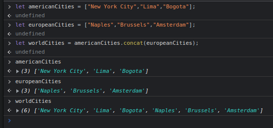
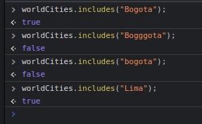
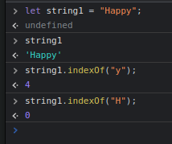
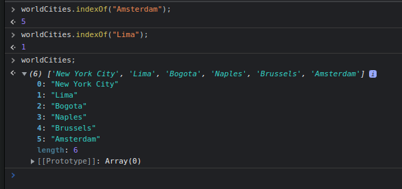
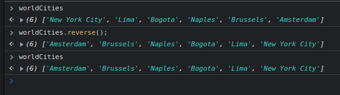

This method helps us combine two arrays,the array we pass in the method will then be in a new array after the last item of the first array we used concat on.
The original 2 arrays will not be changed, as if working with a string, but we can save the resulting array in a variable if wanted.
Here we had 2 arrays; americanCities and europeanCities. After using .concat() we have 3, since we saved the result of the method to worldCities.
It is a boolean method, it will return true or false.
It checks to see if the argument we enter is part of our array.
We have to type what we are looking for exactly as it would be named, otherwise it will return false.
It works like when using it with a string.
We can check if an item is in an array by entering its name as an argument, it will return the index of the item.
Spelling is important here too.
If the item does not exist in the array, it will return -1.
If there are multiple items with the same name, IT WILL RETUTN THE INDEX OF THE FIRST MATCH, not of every single match.
Here is a reminder of the string version of the method and right after the array version.
 It is destructive, meaning it changes the original array.
There is no need to enter an argument, all it will do is take all the items and switch the order in reverse.
Here we see that the original array is different after running the method.
